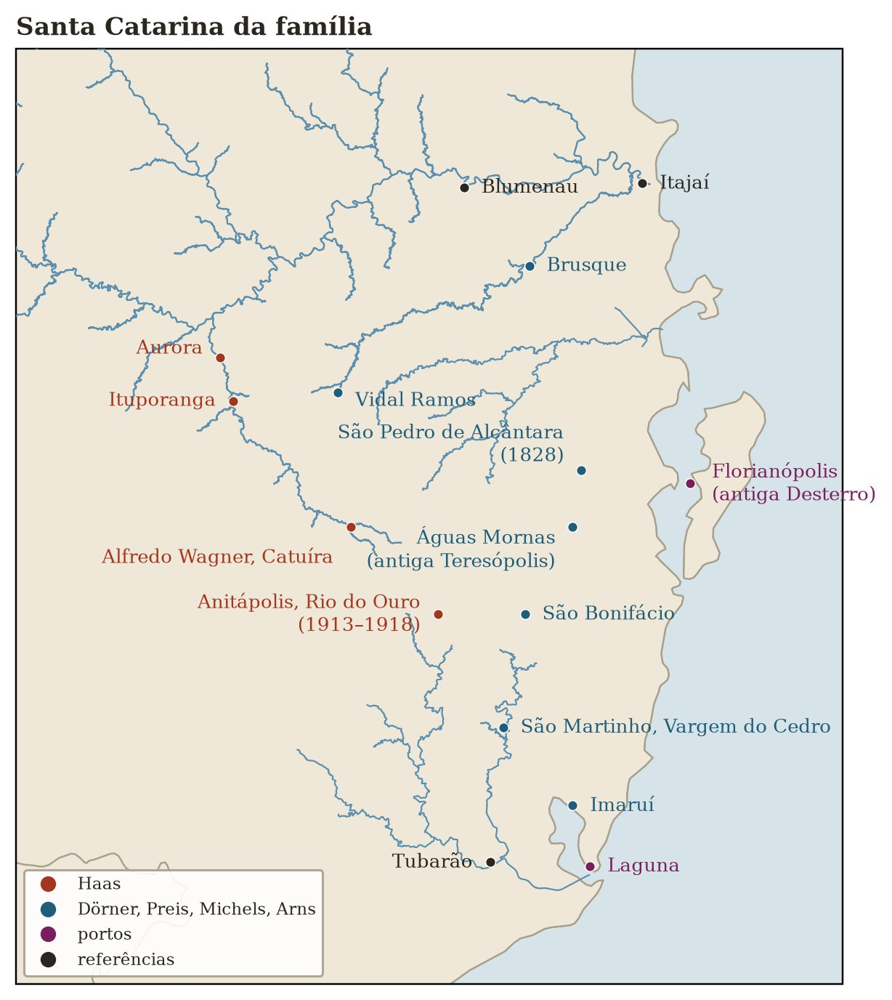

Teil II · Der Dampfer Formosa und der Urwald
Kapitel 6 — Die Gipsengel von Rio do Ouro und die Rodungen von Ituporanga
27,9° S · 49,1° W, Rio do Ouro, Anitápolis · 27,4° S · 49,6° W, Ituporanga, SC
Gips härtet in Minuten aus. Land in Generationen. Wer mit beidem arbeitet, lernt, auf zweierlei Weise zu warten.
Ein Brief aus Heumaden
Rio do Ouro, Santa Catarina, Ende 1914
Irgendwann zwischen Ende 1914 und Anfang 1915 (ich kenne das Datum nicht, und der Brief, falls es ihn noch gibt, ist nie durch meine Hände gegangen) kam im Landesinneren von Santa Catarina ein Brief aus Deutschland an. Er war von einer Schwester der Mota. Es konnte Barbara sein, die älteste der Mädchen, oder Margaretha, oder die kleine Anna, die 1914 etwa sechzehn gewesen wäre. Woran sich die Familie erinnert, ist der Inhalt: Der Krieg hatte begonnen. Sie sollten nicht versuchen zurückzukommen.
Marise erzählt das im Jubiläumstext beiläufig, in einem Satz, der viel verbirgt: „Auch wenn sie verzweifelt waren, unglücklich, und die Zeit zurückdrehen wollten, konnten sie nicht mehr nach Deutschland zurück, denn ein Brief von einer Schwester der Mutter warnte sie vor dem Beginn des Krieges.“ Mutter: das Wort, aus dem die brasilianischen Enkel nach dem Gehör „Mota“ gemacht haben.
Ich denke darüber nach, was dieser Satz verrät. Er verrät zunächst, dass sie zurückwollten. Gut ein Jahr nach der Ankunft, mit zwei begrabenen Kindern und einem Land, das nichts hergab, erwogen Johann und Maria ernsthaft den Weg zurück. Und er verrät, dass jemand in Heumaden davon wusste: dass sie nach Hause schrieben, erzählten, was geschah, und dass die Familie in Bayern antwortete. Es gab noch einen Faden. Der Brief der Schwester war zugleich die Nachricht, die diesen Faden durchschnitt, und der Beweis, dass es ihn gab.
Ich stelle mir vor, wie Maria Johann den Brief beim Schein einer Petroleumlampe vorliest, in einem Holzhaus mitten am Hang. Ich stelle mir die Stille zweier Menschen vor, die gerade begreifen, dass sich die Tür hinter ihnen geschlossen hat. Von nun an führte der einzige Weg nach vorn, und, wie Marise sagt, „sie waren nicht allein, sie hatten Gertrudes und viele Gefährten in derselben Lage“.

Lote 17
Rio do Ouro, Kolonie Anitápolis, 1913 bis 1918
Von der Küste aus, über einen Hafen, den ich noch nicht kenne, zog die Familie ins Landesinnere, die Hänge der Serra Geral hinauf, an einen Ort namens Rio do Ouro. Heute gehört Rio do Ouro zur Gemeinde Anitápolis, im Bergland südwestlich des Großraums Florianópolis. Damals gehörte es zu Palhoça; so verzeichnet Vetter Agenor die Geburt seines Vaters Alexandre: „in Rio do Ouro, Palhoça, gehört heute zu Anitápolis“.
Archivkarte: Genealogische Tabelle von Agenor Haas, biographische Notiz zu Alexandre Haas: „geboren am 23. Mai 1917 in Rio do Ouro, Palhoça, gehört heute zu Anitápolis, SC, war Maurer“. In der Notiz über die Stammeltern vermerkt Agenor, Johann „lebte bis 1918 im Ort Rio do Ouro in Anitápolis, SC, und zog dann nach Rio Novo in Ituporanga“. Quelle: Abschrift der ursprünglichen .xls-Tabelle, aufbewahrt im privaten Familienarchiv.
Anitápolis war eine Siedlungskolonie, die die Bundesregierung wenige Jahre zuvor an den Oberläufen von Flüssen, die aus dem Gebirge kommen, für europäische Einwanderer angelegt hatte. Der Name ehrte Anita Garibaldi, die Heldin von Laguna. Diese Wendung gefällt mir: Wenn die Überlieferung stimmt, kam die Familie über Anitas Heimat nach Santa Catarina und lebte dann an dem Ort, der nach ihr benannt war. Später, ab 1918, sollten die Gebäude der Kolonie ein Patronato Agrícola beherbergen, eine landwirtschaftliche Internatsschule für arme Jungen und Waisen, die die Regierung zu Landarbeitern machen wollte.1 Aber das war schon nach dem Weggang der Haas.
Marise erzählt: „Zusammen mit einem Freund kauften sie ein Stück Land. Das Lote 17, in Rio do Ouro.“ Ein lote war eine der vermessenen Parzellen, in die man das Kolonieland aufteilte und an die Siedler verkaufte. Ich weiß nicht, wer der Freund war: ein anderer Einwanderer aus der Baracke vielleicht, jemand von derselben Reise. Der gemeinsame Kauf sagt viel darüber, wie wenig sie hatten: nicht einmal genug für eine ganze Parzelle. Und das Land, schreibt Marise, war „ein undankbarer Boden: trocken und sauer, nicht imstande, genug Nahrung hervorzubringen, nicht einmal für den eigenen Bedarf. Bis sie herausfanden, wie unfruchtbar er war, hatten sie das Wenige, das sie besaßen, schon hineingesteckt.“
Bei diesem Satz will ich verweilen, denn er sagt etwas über Bodenkunde und über Siedlungspolitik. Die Böden an den Hängen der Serra Geral in Santa Catarina, aus altem Gestein entstanden und über Jahrtausende von reichlichem Regen ausgewaschen, sind meist sauer und nährstoffarm. Unter dem atlantischen Regenwald, der Mata Atlântica, täuschen sie: Der Wald wirkt üppig, weil er seine eigenen Nährstoffe wiederverwertet; die fallenden Blätter ernähren die Wurzeln. Ist der Wald gerodet und das Reisig verbrannt, zehren die ersten Ernten von der Asche; nach zwei, drei Jahren ist der Boden erschöpft. Ein erfahrener Bauer aus Bayern, an einen anderen Boden und ein anderes Klima gewöhnt, konnte das nicht im Voraus wissen. Ein Stuckateur aus der Stadt noch weniger. Und Maria, die sich mit dem Land auskannte, kannte das Land von Heumaden.
Auch die Versprechungen wurden nicht gehalten. Marise zählt auf, was die Regierung versprochen und nicht geliefert hatte: Zuschüsse in Geld, Werkzeug, Saatgut, Vieh, Baumaterial, Straßen, Investitionen in die Gegend. Das ist ein Kehrreim, der fast mit denselben Worten wiederkehren wird, wenn die Familie nach Ituporanga zieht. Die Einwanderer, die Anfang des 20. Jahrhunderts nach Brasilien kamen, wurden oft mit Versprechen angeworben, die der brasilianische Staat nicht erfüllen konnte (oder nicht erfüllen wollte).
Dort, auf dem Lote 17, zwischen dem Warten auf die Ernte und der Enttäuschung über das Wenige, das sie einbrachte, begann die Familie ihr Leben neu aufzubauen. Zwei Jungen wurden geboren: Fernando 1915 und Alexandre am 23. Mai 1917. Nach vier verlorenen Kindern zwei Jungen, die durchkamen. Ich versuche mir vorzustellen, was es für Maria bedeutete, Fernando das erste Lebensjahr überstehen zu sehen, dann das zweite. Jeder Geburtstag muss ein kleiner Sieg gewesen sein über eine Statistik, die sie aus nächster Nähe kannte.
Hier in Rio do Ouro verortet Agenors Tabelle auch die Gräber von Lina und Valter, auf dem Friedhof von Anitápolis. Es sind Luisa und Walter, die beiden Kinder der Formosa: Sie kamen lebend in Rio an, stiegen mit den Eltern ins Gebirge hinauf, und erst im neuen Land starben sie und wurden begraben. Dort blieben sie nicht für immer. Mein Vater Baldoíno fuhr mit seinen Geschwistern nach Anitápolis, um die Überreste der kleinen Geschwister zu holen und nach Ituporanga zu bringen, wo Walter heute begraben liegt. Auf dieser Reise sah er zum ersten Mal Schnee. Er erzählte mir das wie von einem Ausflug, und erst viel später verstand ich, was es war: die in Brasilien geborenen Geschwister, die im kalten Gebirge die Geschwister holten, die aus Deutschland gekommen waren. Das Jahr dieser Reise kenne ich noch nicht, ebenso wenig die Sterbedaten. Die Bücher des Friedhofs von Ituporanga und der Kapelle von Rio do Ouro müssten es sagen.
Engel aus Granilit
In Rio do Ouro entdeckte der Fata das Handwerk, das die Familie vor dem Hunger retten sollte.
Marise schreibt: „Dass sie zwischen dem Warten auf die Ernte und der Enttäuschung, so wenig ernten zu können, keinen Hunger litten, verdankten sie allein dem Vater, der, an Unglück gewöhnt, neben seiner Arbeit als Maurer sein Geschick als Stuckateur umstellte und Grabmäler aus Granilit baute, die er mit Zeichnungen und Engelsfiguren aus Gips verzierte.“
Granilit ist eine Art Kunstmarmor: Zement, vermischt mit Marmor- oder Granitsplittern, der nach dem Aushärten geschliffen und poliert wird, bis er wie Stein glänzt. Es war der Marmor der Armen und über Jahrzehnte das Material unzähliger Gräber auf den Friedhöfen im Landesinneren Südbrasiliens. Ein Handwerker, der Granilit beherrschte, konnte mit Zement, Sand und Geduld ein Grab herstellen, das aussah wie aus edlem Stein. Und wenn er obendrein Engel aus Gips modellieren konnte, um es zu krönen, hatte er etwas anzubieten, das kein anderer Siedler der Gegend herzustellen wusste.
Der Fata konnte es. Die Jahre mit Umrahmungen, Gesimsen und Altären in Deutschland fanden hier eine Verwendung, die er nie hätte vorhersehen können: Statt barocke Kirchen zu schmücken, schmückte er den Tod der Siedler. In einem Land frisch angekommener Einwanderer, mit hoher Sterblichkeit und Familien, die ihre Toten so ehren wollten, wie man es von zu Hause kannte, gab es Nachfrage. Und es lag eine traurige Art von Gerechtigkeit darin. Ein Mann, der vier Kinder verloren hatte, verdiente sein Brot damit, Engel für die Gräber der Kinder anderer zu machen.
Wie diese Engel aussahen, weiß ich nicht. Ich habe kein Foto eines Grabes in Rio do Ouro, das er gemacht hat. Ich stelle mir kleine Figuren vor, mit angelegten Flügeln, mit gefalteten Händen oder einer Blume in der Hand, das Gesicht geneigt: das klassische Repertoire der Grabplastik, das er auf Hunderten deutscher Friedhöfe gesehen haben muss. Ich stelle mir die Formen vor, die er selbst gebaut haben könnte und mit denen sich derselbe Engel auf mehreren Gräbern wiederholen ließ, mit kleinen Abwandlungen von Hand. Aber das ist schon, was ich mir vorstelle. Was die Familie weiß, ist, dass es die Engel gab, dass es viele waren und dass er sie sein Leben lang weiter gemacht hat.
Das ist ein Motiv, das sich durch das Buch ziehen wird. Die Gipsengel des Fata entstanden aus dem Hunger in Rio do Ouro. Fünfzig Jahre später, als er in Aurora starb, wurde er auf einem Friedhof begraben, auf dem viele Gräber von ihm stammten. Die Engel, die er geformt hatte, um zu überleben, wachten am Ende über seinen eigenen Schlaf. Wenn ihr eines Tages nach Aurora fahrt, Matheus und Lucas, schaut euch die Gräber rings um die Urgroßeltern an. Einige davon stammen von den Händen, die, auf Umwegen, auch eure gemacht haben.
1918 hatte die Familie etwas Geld zusammengelegt und war zu einem Schluss gekommen: Auf dem Lote 17 ging es nicht weiter.
Die Rodungen und wer schon dort war
Ituporanga, Alto Vale do Itajaí, 1918
1918 zogen die Haas nach Ituporanga im Alto Vale do Itajaí, dem oberen Itajaí-Tal, „im Gefolge einer neuen Auswanderungswelle, gefördert von den Regierenden des Bundesstaates“, schreibt Marise, „die daran interessiert waren, weite, von Indigenen bewohnte Landstriche zu besetzen“. Billiges Land, Werkzeug und Saatgut, die mit der künftigen Ernte bezahlt werden sollten. Viele Siedler von der Küste verkauften, was sie hatten, und zogen hinauf.
Zuerst wohnten sie zur Miete im Ortskern. Dann kauften sie „eine gute Menge Land“ in Rio Novo, einem Ortsteil von Ituporanga. Dort fanden sie dichten Wald vor, der mit der Axt gerodet werden musste, Baum für Baum, und in dem, so Marise in einem Satz, den ich außergewöhnlich finde, „der Unterschied zwischen Männern und Frauen zu Boden fiel“.
An dieser Stelle muss ich innehalten und etwas tun, was Familienberichte selten tun. Ich muss sagen, wer vor den Haas in diesem Wald war.
Die Wälder des Itajaí-Tals und seiner Nebenflüsse, die Hänge von Ituporanga eingeschlossen, waren das Gebiet der Xokleng, die heute lieber Laklãnõ genannt werden, ein Name, den man meist mit „Volk der Sonne“ oder „die dort leben, wo die Sonne aufgeht“ übersetzt. Sie waren Jäger und Sammler, die durch die Araukarienwälder der Hochebene und die Wälder der Hänge zogen und dabei den Jahreszeiten der Araukariensamen, des pinhão, und des Wildes folgten. Die europäische Kolonisierung des 19. und frühen 20. Jahrhunderts drang genau in dieses Gebiet vor: Blumenau, Brusque, Joinville und später die Kolonien des Alto Vale wurden auf Land angelegt, das die Xokleng bewohnten und von dem sie lebten.
Der Zusammenstoß war gewaltsam, auf beiden Seiten, und er war nicht symmetrisch. Die Xokleng griffen Siedler an, die den Wald rodeten und das Wild vertrieben. Die Regierungen und die Kolonisationsgesellschaften antworteten, indem sie die sogenannten Bugreiros anheuerten: Trupps bewaffneter Männer, die dafür bezahlt wurden, den Wald von Indigenen zu „säubern“. Die Bugreiros überfielen die Lager im Morgengrauen, töteten Männer, Frauen und Kinder und nahmen manchmal Ohren als Beweis für die getane Arbeit mit, um ihren Lohn zu bekommen. Marise hat in dem Text, den sie 2013 vor sechshundert Nachkommen vorlas, nichts beschönigt: Sie schrieb, die Gegend sei „rechtmäßig bewohnt von Indigenen, die über die Invasion und die Missachtung erzürnt waren“; einige Siedler hätten ein friedliches Zusammenleben versucht, „aber die politischen Interessen waren andere“; der Staat habe Bugreiros angeheuert „und sie für jeden abgelieferten Skalp bezahlt“; und so sei „die Politik der Landnahme erfolgreich gewesen, habe aber den Völkermord an der indigenen Bevölkerung unter der Schirmherrschaft des Staates verschleiert“.
Lest diesen Satz noch einmal, denn er wurde von einer von uns geschrieben, an einem Festtag, um der ganzen Familie laut vorgelesen zu werden. Es ist ein mutiger Satz. Und er ist, soweit die Geschichtsschreibung es zu sagen erlaubt, wahr. Der Anthropologe Sílvio Coelho dos Santos aus Santa Catarina hat einen guten Teil seines Lebens damit verbracht zu dokumentieren, was den Xokleng geschah, und das Wort, das Historiker heute dafür verwenden, ist dasselbe wie bei Marise.2 1914, nach Jahrzehnten des Mordens, wurde eine kleine Gruppe überlebender Xokleng von Regierungsbeauftragten am Ufer des Rio Plate kontaktiert, nahe dem heutigen Ibirama, und in einem Reservat festgesetzt. Als die Haas 1918 ins Alto Vale kamen, lag die „Befriedung“ erst kurz zurück, und das Gebiet war von seinen Eigentümern mit Gewalt praktisch geleert worden.
Ich weiß nicht, ob die Haas je Kontakt mit den Xokleng hatten. Die Familie hat keine solche Geschichte bewahrt, und ich werde keine erfinden. Aber ich kann die Geschichte der Rodung in Rio Novo nicht so erzählen, als hätte dieser Wald leer auf jemanden gewartet. Er war geleert worden. Die Urgroßeltern haben niemanden getötet: Sie waren arm, kamen spät, kauften Land, das andere „freigemacht“ hatten. Aber das Land, auf dem euer Großvater Baldoíno geboren wurde, war mit Gewalt einem Volk genommen worden, das es noch gibt und das noch immer ganz in der Nähe lebt.
Es lebt noch, und es verliert noch. Die Terra Indígena Ibirama-Laklãnõ, das indigene Schutzgebiet im Tal des Rio Hercílio, wenige Dutzend Kilometer von Ituporanga entfernt, ist heute die Heimat der Nachkommen jener Überlebenden von 1914. Und gerade dort baute der Staat gegen Ende des 20. Jahrhunderts die Barragem Norte, den Nord-Damm in José Boiteux, der 1992 fertiggestellt wurde, um die Hochwasser des Itajaí zurückzuhalten, die die Städte im mittleren und unteren Tal überfluteten: Rio do Sul, Blumenau, Gaspar, Itajaí. Der Stausee überflutete einen Teil des Schutzgebiets. Um die von Siedlern gegründeten Städte zu schützen, setzte man das Land unter Wasser, das den Indigenen geblieben war. Es ist ein noch lebendiger Konflikt, der bei jedem Hochwasser und bei jeder Diskussion über den Betrieb des Damms wieder aufbricht.
Ich arbeite mit den Hochwassern des Itajaí. Über die Barragem Norte kann ich nicht nur als Wasserbauingenieur schreiben. Sie ist auch ein Erbe, und nicht alle Erbschaften in diesem Buch sind schön.
Die Mota allein im Wald
Rio Novo, Ituporanga, 1920er Jahre
In Rio Novo baute die Familie ein kleines Haus mitten im Wald. Hier verschiebt sich der Blick in Marises Text: Im Mittelpunkt der Geschichte steht nicht mehr der Fata, sondern die Mota.
Der Fata blieb nicht zu Hause. Das Land gab wieder nicht genug her, und er ging in die Stadt, um als Maurer zu arbeiten, manchmal tagelang am Stück. Maria blieb. „Allein, Tag um Tag, arbeitete die Mutter und kümmerte sich um die Kinder.“ Die Landwirtschaft diente der Selbstversorgung: Mais, Bohnen, Maniok, ein Gemüsegarten, ein paar Hühner und Schweine. „Die Haustiere vermischten sich mit den wilden, und die Angst vor dem, was aus dem Wald kommen konnte, mischte sich mit dem Mut einer Frau, die entschlossen war, das Leben ihrer Kinder zu sichern.“
Rio Novo, irgendein Nachmittag, Mitte der 1920er Jahre
Ich stelle mir irgendeinen Nachmittag vor. Maria ist auf dem Feld, die Hacke in der Hand, und Gertrudes, die schon etwa zwölf ist, hütet die Kleinen im Schatten. Fernando und Alexandre, etwa zehn und acht, tragen Feuerholz. Ein Baby schläft in einem Korb. Am Waldrand ein Geräusch: ein Tier, vielleicht eine Wildkatze, die es auf die Hühner abgesehen hat, vielleicht nichts. Sie hält inne, schaut, fasst die Hacke anders. Dann arbeitet sie weiter, hebt aber ab und zu den Blick zu dem Pfad, der zur Straße führt. Marise sagt, sie habe „immer mit dem Blick auf die Straße“ gelebt, „wartend, dass der Mann mit den Vorräten kam, die das Land nicht hergab“.
Kommt der Vater heute?
Ich stelle mir vor, dass eines der Kinder diese Frage oft gestellt hat. Und ich stelle mir die Antwort vor, ebenfalls oft: Vielleicht morgen.
In diesem Haus kamen vier weitere Kinder zur Welt: Agnes, die in Brasilien Inês heißen sollte, 1920; Elza 1922; Baldoíno am 20. April 1924; und Maria, die jüngste der Mädchen, 1926. Die Register dieser Kinder erzählen den Umzug weniger sauber als die Überlieferung. Alexandre wurde am 18. Juni 1917 getauft, noch in der Zeit von Anitápolis. Agnes wurde im Januar 1920 geboren, aber im März in Teresópolis getauft, der alten Pfarrei im Süden. Elza wurde 1922 als in Catuíra geboren eingetragen, heute Alfredo Wagner, am Weg durchs Gebirge zwischen Anitápolis und Ituporanga. Und das Profil von Baldoíno bei FamilySearch verlegt sein Rio Novo nach Águas Mornas, wo es ein anderes Rio Novo gibt. Das kann ein Fehler dessen sein, der das Profil angelegt hat; es kann auch sein, dass die Familie mehr als einmal hin- und hergezogen ist, bevor sie sich im Alto Vale niederließ. Der Weggang aus Anitápolis fällt in die Zeit zwischen Juni 1917 und Anfang 1920; der Rest muss noch überprüft werden. Baldoíno ist mein Vater. Er wurde in einem Siedlerhaus mitten im gerodeten Wald geboren, von einer Mutter, die kein Portugiesisch sprach, während der Vater weit weg arbeitete, auf einem Land, das bis wenige Jahre zuvor den Xokleng gehört hatte. In meiner Erinnerung ist er der ruhige Mann aus Vidal Ramos, der wenig von diesen Dingen erzählte. Erst jetzt, beim Zusammentragen der Papiere, verstehe ich, aus welchem Schweigen diese Ruhe gemacht war.
Mit sieben Kindern, die sie „praktisch allein“ großziehen musste, und weil die Kinder zur Schule gehen sollten, überzeugte Maria schließlich die Familie, wieder in die Nähe des Ortskerns zu ziehen. Sie zogen nach Águas Negras, einem anderen Ortsteil von Ituporanga, wo sie wieder Land kauften, aber, so Marise, „die Landwirtschaft nicht mehr zu ihrer Haupteinnahmequelle zu machen suchten“.3 Die Schule war wichtig, weil die Kinder zu Hause nur Deutsch sprachen. Die aus Deutschland mitgebrachten Bücher und die Blumenauer Zeitungen, die die Familie abonniert hatte, hielten die Sprache lebendig, aber in der Schule sollten die Kinder das Portugiesisch lernen, das die Eltern nie beherrschten.
Dort wurde 1932 das letzte Kind geboren: João, der Name des Vaters, übertragen in das neue Land. Er starb klein. Marise schreibt, sein Tod „rief den Schmerz über den Verlust der ersten vier Kinder wieder wach und spiegelte sich in allen“. Das fünfte. Maria war etwa vierundvierzig.
Hildegard, Frida, Luisa, Walter, João. Immer wenn ich diese fünf Namen zusammen schreibe, denke ich, dass der Mut der Mota im Wald von Rio Novo mehr war, als Tieren und Einsamkeit zu trotzen. Es war der Mut, weiter Kinder zu bekommen, nachdem sie welche verloren hatte, und die, die blieben, weiter zu lieben, ohne Angst, auch sie zu verlieren. Marise sagt, sie habe „nie eine Gelegenheit ausgelassen, zu umarmen, zu umarmen, zu umarmen“. Jetzt verstehe ich ein wenig besser, warum.
Die Bauten und der Fluss
In Ituporanga, schreibt Marise, „setzte sich der Beruf des Vaters durch“. Die Jungen, noch klein, begannen beim Fata das Maurerhandwerk zu lernen: Fernando, Alexandre und später Baldoíno. Das Handwerk „ging den Jungen in Fleisch und Blut über“, und mit ihm sollten alle drei ihre Familien ernähren, in verschiedenen Städten und Bundesstaaten.
Dann begann die Familie, die Stadt zu bauen, im wörtlichen Sinn. Der Fata, der in der Kirche von Ituporanga auch Presbyter war, war vor allem ein Kirchenbauer. Das Wort „Presbyter“ ist das der Familie. In der katholischen Kirche ist ein Presbyter ein geweihter Priester, und der Fata war kein Priester. In den Kapellen der deutschen Kolonien, die von Ordenspatres betreut wurden, die nicht jeden Sonntag überall sein konnten, gab es Laien, die sich um die Kapelle kümmerten, um die Schlüssel, die Bauarbeiten und den Friedhof, und die die Gebete vorbeteten, wenn der Pfarrer nicht kam: die fabriqueiros, eine Art Kirchenpfleger, oder den Kapellenvorstand, den Vorstand. Wahrscheinlich war das seine Aufgabe. Nur die Pfarrchronik, das livro do tombo der Pfarrei Ituporanga, kann das genaue Amt und die Jahre angeben. Die Haas errichteten in Ituporanga die Hauptkirche, das Pfarrhaus, das Franziskanerseminar und den Erweiterungsbau des Krankenhauses der Schwestern. Und in der ganzen Gegend „Vereinshäuser, Schulen, Wohnhäuser, Trockenhäuser, Backöfen, Herde, Treppen, Sägewerke, Grabmäler und so viele andere Bauten mehr“. Die Daten der einzelnen Bauten habe ich noch nicht; die Pfarrchroniken und die Archive der Gemeinde müssten sie haben, und eines Tages wird jemand aus der Familie danach suchen. Was ich weiß, ist die Kette der Hände: Der Fata lehrte die Söhne, und Alexandre, der als Einziger in Ituporanga blieb, „hinterließ seine Spur an den größten Bauwerken der Stadt“.
Ich kehre für einen Augenblick nach Bayern zurück, wo das Land ungeteilt an einen einzigen Erben ging und wo Josef Haas, der Vater des Fata, das Feld gegen den Rauch des Hüttenwerks eingetauscht hatte. Sein Sohn Johann überquerte einen Ozean, um eigenes Land zu haben, und er bekam es, dreimal: auf dem Lote 17, in Rio Novo, in Águas Negras. Keines davon hat ihn ernährt. Was die Familie am Ende ernährte, war das Handwerk, zu dem der Mangel an Land die Haas Generation um Generation gedrängt hatte: die Arbeit mit Lehm, Stein, Kalk und Gips.
Ituporanga liegt am Rio Itajaí do Sul, einem der Quellflüsse des Itajaí-Açu. Die Familie kam sieben Jahre nach einem der größten Hochwasser in der Geschichte Blumenaus ins Alto Vale, dem von 1911, das also zwei Jahre vor der Ankunft der Haas in Brasilien geschah, als sie noch in Bayern waren und nicht wussten, dass es das Itajaí-Tal gab. Blumenau hatte schon 1880 ein weiteres großes Hochwasser erlebt. Das ganze Tal lebte seit der Gründung der Kolonien am Ufer von Flüssen, die steigen.
Der Mechanismus ist das, was ich seit Jahrzehnten untersuche. Die steilen Hänge des Alto Vale empfangen die Feuchtigkeit, die vom Ozean kommt, von östlichen Winden gegen das Gebirge gedrückt oder vom Low-Level-Jet, einem Starkwindband in den unteren Luftschichten, aus dem Norden herangeführt, wenn eine Front über dem Bundesstaat liegen bleibt. Der Regen fällt auf Hunderte kleiner Flüsse (den Itajaí do Sul, den Itajaí do Oeste, den Itajaí do Norte, der der Hercílio ist), und alle laufen in Rio do Sul zusammen und fließen von dort gemeinsam bis Blumenau und zum Meer. Wenn es im ganzen Alto Vale zur gleichen Zeit stark regnet, kommen die Wasser gleichzeitig an, und das ganze Tal läuft voll.
Um dem zu begegnen, baute man Jahrzehnte später die drei Rückhaltedämme des Alto Vale: den West-Damm in Taió; den Nord-Damm in José Boiteux, denselben, der einen Teil des Landes der Laklãnõ überflutete; und den Süd-Damm in Ituporanga, am Rio Itajaí do Sul, in den 1970er Jahren. Die Barragem Sul liegt in der Gemeinde, die die Haas mit aufgebaut haben. An Tagen mit starkem Regen hält sie das Wasser zurück, das von denselben Hängen herabkommt, an denen der Fata und die Mota mit der Axt Lichtungen schlugen. Ich weiß nicht, ob der Fata die Bauarbeiten am Damm noch erlebt hat; er starb 1969, schon in Aurora. Aber ich stelle mir gern vor, dass er, der Dinge baute, die halten sollten, die Logik eines Bauwerks verstanden hätte, das einen Fluss zurückhalten soll.
Aurora liegt etwas weiter talabwärts. Dorthin zogen die Urgroßeltern im Alter, in die Nähe der Töchter Agnes und Maria, und dort liegen sie begraben, umgeben von den Engeln, die er gemacht hat.
Vorher, 1939, als die Kinder erwachsen waren und die Stadt stand, traf der Fata eine Entscheidung, die niemand in der Familie je richtig erklären konnte. Er wollte nach Deutschland zurück.
Für euch zum Entdecken
- Welche der Schwestern der Mota hat den Brief über den Krieg geschrieben: Barbara, Margaretha, Anna? Fragt die Vettern und Cousinen, ob dieser Brief noch in irgendeiner Schublade liegt.
- Wer war der Freund, der das Lote 17 zusammen mit dem Fata kaufte?
- Warum wurde Elza 1922 als in Catuíra geboren eingetragen, und warum verlegt das Profil von Baldoíno sein Rio Novo nach Águas Mornas? Ist die Familie hin- und hergezogen, bevor sie sich im Alto Vale niederließ?
- Welches Amt hatte der Fata in der Kirche, wenn die Familie ihn Presbyter nannte und er kein Priester war? Die Pfarrchronik (livro do tombo) der Pfarrei Ituporanga kann es sagen.
Zum Patronato Agrícola von Anitápolis (1918–1930) siehe Daniel Alves Boeira, Uma “solução” para a menoridade na Primeira República: o caso do Patronato Agrícola de Anitápolis/SC (1918–1930), Masterarbeit, UDESC, 2012, zitiert von Juliana da Silva Monteiro und Maria do Carmo Brazil in der Revista HISTEDBR On-line, Bd. 19, 2019.↩︎
Sílvio Coelho dos Santos, Índios e brancos no sul do Brasil: a dramática experiência dos Xokleng (1973), neben weiteren Arbeiten des Autors. Die heutige Sicht der Laklãnõ selbst, die zu vertreten diesem Buch nicht zusteht, findet sich in den Äußerungen ihrer Anführerinnen und Anführer und bei indigenen Forschenden aus der Terra Indígena Ibirama-Laklãnõ.↩︎
Die Chronologie in der Tabelle von Agenor Haas ist etwas anders und ausführlicher: Rio Novo ab 1918; Ortskern von Ituporanga von 1923 bis 1925; wieder Rio Novo; Águas Negras ab 1930; und schließlich Rio das Pacas in Aurora. Baldoíno, 1924 geboren, erscheint in derselben Tabelle als in Rio Novo geboren, was zeigt, dass man diese Umzugsdaten mit etwas Spielraum lesen muss.↩︎